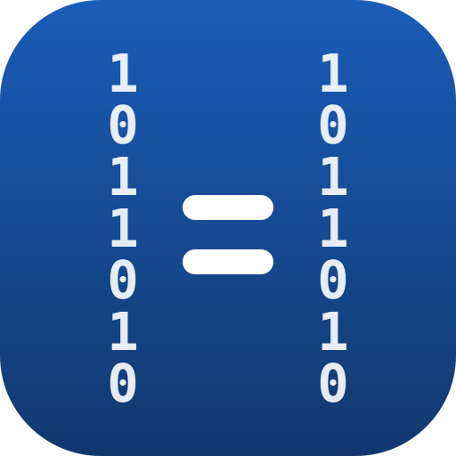

Докажите, что при миграции БД не потерялась и не исказилась ни одна строка
Prove your database migration didn't lose or corrupt a single row
Что интегратор кладёт заказчику на стол: вердикт, графики, примеры расхождений. Oracle→PostgreSQL, 12 подложенных ошибок.
Все ключи config.yaml: эндпоинты, правила нормализации, hash-режим, инкременты, чекпоинты, ретраи.
Замороженная схема v1 с semver-гарантиями — стройте свою автоматизацию поверх отчётов без страха поломок.